기계정비산업기사 (2005-08-07 기출문제)
1과목: 공유압 및 자동화시스템
1. 다음 중 구조가 간단하고 값이 저렴하여 널리 사용되는 펌프는?
- 기어펌프
- 베인펌프
- 나사펌프
- 피스톤펌프
(정답률: 84%)

2. 보통 공압회로에서는 얻을 수 없는 고압을 발생시키는 경우 사용되는 것으로 기기의 입구측 압력을 그것에 비례한 높은 출구압력으로 변환하는 기기를 무엇이라고 하는가?
- 공유압변환기(Pnenumatic-Hydraulic converter)
- 인덕터(Inducter)
- 하이드로릭 체크유닛(Hydraulic check unit)
- 증압기 (Intencfier)
(정답률: 67%)
3. 유압펌프에서 송출압력을 P(㎏/cm2) 실제 송출량이 Q(cm3/sec) 일때 펌프동력 LP(kw)를 구하는 공식은
- LP=(PQ/4500) kw
- LP=(PQ/7500) kw
- LP=(PQ/8200) kw
- LP=(PQ/10200) kw
(정답률: 54%)
4. 다음그림의 밸브명칭은?
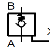
- 급속배기 밸브
- 파일럿조작 체크밸브
- 체크밸브
- 서보밸브
(정답률: 52%)
5. 유체의 흐름에 관한 설명중 잘못된 것은?
- 관을 흐르는 유체는 레이놀즈수에 따라 층류와 난류로 구분한다.
- 층류에서 마찰 손실계수는 레이놀즈수를 62로 나눈 것이다.
- 레이놀즈수가 2300이하인 유도은 층류이다.
- 점도계수가 작고 유속이 굵은 관을 흐를 때 난류가 일어나기 쉽다.
(정답률: 49%)
6. 절대압력이 7 ㎏f/cm2 이고 게이지압력이 6.15 ㎏f/cm2 일 때 국소 대기압은 몇 mmHg인가?
- 525
- 625
- 725
- 735
(정답률: 57%)
7. 다음 그림은 유압모터 회로이다 옳은 것은?
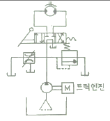
- 정출력 구동회로
- 브레이크 회로
- 정토크 구동회로
- 증압회로
(정답률: 57%)
8. 다음 그림에 대한 설명으로 옳은 것은?
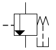
- 항상 고압측의 신호만 통과시키는 절환밸브이다.
- 유체의 방향을 제어하기위한 밸브이다.
- 주회로의 압력을 일정하게 유지하면서 조작의 순서를 제어할 때 사용하는 밸브이다.
- 유체의 양을 조절하기 위한 밸브이다.
(정답률: 60%)
9. 다음 실린더는 어떤 실린더를 나타냄 기호인가?
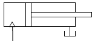
- 다이어프램 실린더
- 복동 실린더
- 쿠션장착 실린더
- 단동 실린더
(정답률: 77%)
10. 공기를 여과하여 분리하는 방법중 사용하지 않는것은 무엇인가?
- 원심력을 이용하여 분리하는 방법
- 충돌판에 닿게하여 분리하는 방법
- 냉각하여 분리하는 방법
- 교축하여 분리하는 방법
(정답률: 46%)
11. 유압펌프 소음발생 원인이 아닌 것은?
- 펌프의 흡입이 불량한 경우
- 작동유의 점성이 너무 높은 경우
- 필터가 막힌 경우
- 릴리프 밸브가 완전히 닫힌 경우
(정답률: 62%)
12. 복수의 FMC를 경로변경이 가능한 자동반송장치에 의해 유기적으로 결합하여 플렉시블하게 가공물을 공작기계에 반송할 수 있는 시스템은 어느 것인가?
- FMS
- FMS 전형적인
- FTL
- CIM
(정답률: 65%)
13. 리드스위치(read switch)의 특성이 아닌 것은?
- 스위칭시간 이 짧다.
- 반복정밀도가 높다.
- 회로구성이 복잡하다.
- 소형, 경량 저가격이다.
(정답률: 67%)
14. 다음은 1kbit에 대한 설명이다. 맞는것은?
- 256bit이다.
- 128byte이다.
- 256byte이다.
- 128bit이다.
(정답률: 57%)
15. 측온저항체의 특성이 아닌 것은?
- 가격이 비싸다.
- 최고사용온도가 600℃정도이다.
- 충격 진동에 강하다.
- 응답속도가 느리다.
(정답률: 39%)
16. 스텝각이 1.8°인 스텝핑 모터의 제원이 그림과 같을 때, 기어비를 구하면 얼마인가? (단 1스텝 이동량 d = 0.01 mm/pulse 이다.)
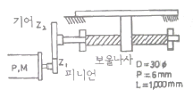
- 1
- 3
- 5
- 10
(정답률: 44%)
17. 직류전동기에서 정류자의 역할로 타당한 것은?
- 전기자 코일의 전류의 방향을 계자와의 관계에 따라 바꾸는 장치이다.
- 계자를 회전시키고 전기자를 고정시킨다.
- 축수부하를 작게하기 위해 사용한다.
- 회전력을 발생시키는 부분으로 주 전류를 통하게 한다.
(정답률: 52%)
18. 설비의 평균 고장률을 나타내는 것은?(오류 신고가 접수된 문제입니다. 반드시 정답과 해설을 확인하시기 바랍니다.)
- MTTR
- MTBF
- 1/MTBR
- 1/MTBF
(정답률: 31%)
19. 다음의 메모리 중에서 사용자에 의해 오직 1번만 프로그램할수 있는 메모리는?
- PROM(Progrmmable ROM)
- EEROM(Electrical Erasable ROM)
- EAROM(Electrical Alterable ROM)
- EPROM (Erasable PROM)
(정답률: 68%)
20. 자동화시스템의 구성요소중 입력된정보를 미리 정해진 일련의 명령에 의해 처리하여 출력으로 내보내는 인간의 두뇌와 같은 역할을 하는 것은?
- 센서
- 프로세서
- 액추에이터
- 프로그램
(정답률: 56%)
2과목: 설비진단관리 및 기계정비
21. 재료의 흡음률에 대한 올바른 지식은?
- α = 입사에너지/흡수에너지
- α = 흡수에너지/입사에너지
- α = 입사에너지/투과에너지
- α = 투과에너지/흡수에너지
(정답률: 59%)
22. 대형 송풍기의 V 밸트가 마모 손상 되었을 때 대책은?
- 전체 세트로 교체
- 손상된 밸트를 교체
- 손상된밸트만 교체
- 손상된 밸트를 수리
(정답률: 60%)
23. 설비 사양서라고도하며 설비의 용도, 주요치수,용량, 능력, 정도, 성능 등을 표시하는 설비보전 표준은?
- 시운전 검수표준
- 설비 성능표준
- 설비자재 검사표준
- 설비 보전표준
(정답률: 66%)
24. 표준 마이크로미터에서 슬리브의 최소눈금이 0.5mm, 딤블이 50등분되어 있다면 최소 측정값은 몇 mm 인가?
- 0.01
- 0.02
- 0.⑤
- 0.1
(정답률: 64%)
25. 다음중 분해용 공구가 아닌 것은?
- 기어 플러
- 베어링 플러
- 핸드 버킷펌프
- 스톱링 플라이어
(정답률: 60%)
26. 어느공장의 월 가동수가 20일인 장비가 설비고장과 작업고장에 의한 설비휴지시간이 1개월에 10시간 걸리면 실제가동률은 몇 %인가? (단 1일 가동시간은 8시간이다.)
- 93.75
- 96.25
- 95.3
- 91.8
(정답률: 51%)
27. 설비관리 요원이 가져야할 근무자세는?
- 전문기술영역이나 작업량 증가시 외주업체를 이용한다.
- 중요설비의 최고부하(Peak Load)를 없앤다.
- 보전요원의 능력을 개발한다.
- 긴급 돌발이 발생하지 않도록 조치한다.
(정답률: 61%)
28. 한국 산업규격에 따른 방청유로 구분되지 않는 것은?
- 수분함유형
- 지문제거형
- 용제희석형
- 방청 페트롤 라이텀
(정답률: 61%)
29. 집중보전의 장점으로 맞는 것은?
- 보전요원이 쉽게 작업자에게 접근할 수 있다.
- 생산라인의 공정변경이 신속히 이루 어진다.
- 보전요원이 생산계획 및 생산에 관한 문제를 쉽게 일 수 있다.
- 대 수리시 충분한 인원을 동원 할 수 있다.
(정답률: 48%)
30. 베어링의 결함유무를 측정하고자 할 때 사용되는 진동측정용 센서는?
- 변위계
- 속도계
- 가속도계
- 레밸계
(정답률: 59%)
31. 전기적인 진동 검출 방법중 접촉형은?
- 압전형
- 용량형
- 맴돌이형
- 홀소자형
(정답률: 60%)
32. 다음중 간이진단법에 속하지 않는 것은?
- 주파수 분석판정
- 상대판정
- 상호판정
- 절대판정
(정답률: 60%)
33. 일반적인 시스템 구성요소로서 맞는 것은?
- 투입, 산출, 관리, 처리기구, 생산
- 투입, 산출, 처리기구, 관리, 피드백
- 조사, 연구, 설계, 관리, 제작
- 설치, 운전, 보전, 생산, 검사
(정답률: 56%)
34. 송풍기 베어링 케이스의 발열원인이 아닌 것은?
- 베어링 케이스에 구리스 과다주입
- 베어링 케이스 커버의 심한 손상
- 베어링 내륜의 마모
- 베어링과 축의 억지 끼워맞춤
(정답률: 27%)
35. 고속 고하중 기어의 이면에 유막이 파괴되어 국부적으로 금속이 접촉하여 마찰에 의해 그 부분이 용융되어 뜯겨나가는 현상으로 마모가 활동방향에 생기는 현상은?
- 정상마모(normal wear)
- 리징(ridging)
- 긁힘(scratching)
- 스코링(scoring)
(정답률: 71%)
36. 다음중 가장 정밀하게 축이음을 하여야 하는 것은?
- 기어 커플링
- 프렉시블 커플링
- 체인 커플링
- 플렌지 커플링
(정답률: 53%)
37. 풍량변화에 풍압변화가 적고 푸량이 증가하면 소요동력도 증가하는 원심형 팬은?
- 실리코 팬
- 플레이트 팬
- 터보 팬
- 프로펠러 팬
(정답률: 45%)
38. 작업장내의 음파의 종류와 관계없는 것은?
- 평면파
- 발산파
- 직선파
- 구면파
(정답률: 41%)
39. 보전용 자재의 월간사용량 700개 단가가 개당25원 구입기간중 최대사용빈도 K값이 100원인 경우 경제적 주문량은 약 몇 개인가?
- 450
- 473
- 551
- 529
(정답률: 24%)
40. 펌프의 동력이 급차단, 급가동시에 관내부의 압력이 상승 또는 하강하는 현상은?
- 케비테이션(cavitation )
- 수격작용(water hammer)
- 서징(surging)
- 부식(corrosion)
(정답률: 61%)
3과목: 공업계측 및 전기전자제어
41. 탄성압력계가 아닌 것은?
- 부르돈관식 압력계
- 다이어프램식 압력계
- 분동식 압력계
- 침종식 압력계
(정답률: 43%)
42. 제어기에는 검출기, 변환기, 증폭기, 조작기기 등으로 구성되어진다. 이때 서보모터는 어디에 해당되는가?
- 조작기기
- 증폭기
- 변환기
- 검출기
(정답률: 58%)
43. 그림에서 A. B의 논리소자는?
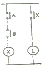
- AND회로
- OR회로
- NOT회로
- NOR 회로
(정답률: 75%)
44. 다음 그림은 어떤 논리회로를 나타낸 것인가?
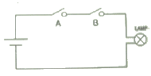
- AND회로
- OR회로
- NOT회로
- NOR 회로
(정답률: 73%)
45. 접촉방식 온도계가 아닌 것은?
- 압력온도계
- 저항온도계
- 열전온도계
- 방사온도계
(정답률: 71%)
46. 다음 프로그램과 맞는 래더 다이어그램(ladder diagram)은?
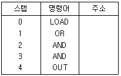
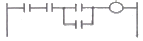
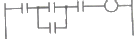
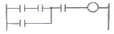
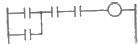
(정답률: 46%)
47. 피드백 제어계에서 설정값을 표시하는 것은?
- PV
- SV
- MV
- DV
(정답률: 44%)
48. 되먹임 제어(feed back control)에서 반드시 필요한 장치는?
- 구동기
- 조작기
- 검출기
- 비교기
(정답률: 62%)
49. 변압기의 권수비가 60이고 1차전압이 6600[V]이면 2차 전압은?
- 380[V]
- 110[V]
- 220[V]
- 190[V]
(정답률: 50%)
50. 섭씨온도에서 물의 빙점을 0 [℃]로 하면 화씨온도의 물의 빙점은 얼마인가?
- 0
- 32
- 273.25
- 491.67
(정답률: 34%)
51. 정전 전압계와 콘덴서를 직렬로 접속하고 그 양단에 2000[V]를 가할 때 정전 전압계에 걸리는 전압은 얼마인가?
- 100[V]
- 200[V]
- 300[V]
- 400[V]
(정답률: 24%)
52. DC모터의 장점으로 맞지 않는 것은?
- 브러시기 없어 보수가 용이하다
- 토크가 전류에 비례하므로 기동토크가 좋다
- 제어 선형성이 좋아 응답성이 좋다
- 회전수는 모터 단자 전압에 의해 정해진다.
(정답률: 44%)
53. 장시간(수 밀리초 : 수 msec)데이터를 유지하지못해 리프레쉬(refresh)가 필요하나 대용량을 지닌 메모리는?
- PROM
- DRAM
- SRAM
- EPRAM
(정답률: 47%)
54. PLC 기본 모듈(CCU)의 구성이 아닌 것은?
- 전원부
- A/D변환부
- CPU
- 입출력부
(정답률: 60%)
55. 전동기 직입 기동회로에서 주 회로에 구성되는 기기가 아닌 것은?
- 배선용차단기
- 전자 접촉기의 주 접점
- 푸시버튼 스위치
- 열동 계전기
(정답률: 43%)
56. 전기회로에서 일어나는 과도현상은 그 회로의 시정수와 관계가 있다. 이 사이의 관계를 바르게 표현한 것은?
- 시정수는 과도 현상의 지속 시간에는 상관되지 않는다.
- 시정수가 클수록 과도 현상은 빨라진다.
- 회로의 시정수가 클수록 과도 현상은 오래 지속된다.
- 시정수의 역이 클수록 과도 현상은 천천히 사라진다
(정답률: 64%)
57. 이상적인 OP 앰프 특징이 아닌 것은?
- 전압이득이 0 이다.
- 입력 임피던스가 무한대 이다.
- 출력 임피던스가 0 이다.
- 주파수 대역이 직류에서 무한대 이다.
(정답률: 62%)
58. 지시계의 3대 구동요소에 해당되지 않는 것은?
- 구동장치
- 제어장치
- 제동장치
- 경보장치
(정답률: 65%)
59. 다음의 설명 중 틀린 것은?
- 3상 유도전동기는 운전 중 전원이 1선 단선되어도 운전이 계속된다.
- 단상 유도전동기는 기동을 위해 보조권선을 사용한다.
- 콘덴서전동기는 콘덴서에 의해 역률이 높고,토크가 균일하며, 소음이적다.
- 분산기동형 유도전동기의 회전방향 변경은 전원의 접속을 바꾼다.
(정답률: 35%)
60. 다음 중 PLC의 입력부에 연결되어질 기기가 아닌 것은?
- 인코더
- 근접스위치
- 솔레노이드밸브
- 디지털계측기
(정답률: 55%)
4과목: 기계정비 일반
61. 다음 원소들 중에서 용융점이 가장 낮은 것은?
- 백금
- 수은
- 납
- 아연
(정답률: 49%)
62. 뜨임처리의 목적으로 틀린 것은?
- 담금질 응력제거
- 치수의 경년 변화 방지
- 연마 균열의 방지
- 내마모성의 저하
(정답률: 56%)
63. 공구재료가 갖추어야 할 일반적 성질중 틀린 것은?
- 취성이 클 것
- 인성이 클 것
- 고온경도가 클 것
- 내마멸성이 클 것
(정답률: 48%)
64. 일반적으로 냉간가공과 열간가공의 구분은 무엇으로 하는가?
- 회복
- 재결정온도
- 가공도
- 결정입도
(정답률: 62%)
65. 탄소강에 나타나는 취성과 원인들이다. 틀린 것은?
- 청열취성 - 200 ~300℃
- 적열취성 - 황(S)
- 상온취성 - 인(P)
- 고온취성 - 질소(N)
(정답률: 50%)
66. 강의 표면경화법으로서 표면에 Al을 침투시키는 표면경화법은 어느 것인가?
- 크로마이징
- 칼로라이징
- 실리콘나이징
- 보론나이징
(정답률: 34%)
67. 금속의 일반적인 특징이 아닌 것은?
- 고체상태에서 결정구조를 갖는다
- 열과 전기의 부도체이다.
- 연성 및 전성이 좋다.
- 금속적 광택을 가지고 있다.
(정답률: 59%)
68. 다음 구조용 복합재료 중 섬유강화 금속은 어느 것인가?
- FRTP
- SPF
- FRM
- FRP
(정답률: 34%)
69. 6:4황동에 1~2% Fe를 첨가하여 결정입자를 미세화시키고 강도를 증가시킨 합금을 무엇이라고 하는가 ?
- 네이벌황동
- 델타 메탈
- 듀라나 메탈
- 톰백
(정답률: 46%)
70. 순철에서 일어나지 않는 변태는?
- A0
- A2
- A3
- A4
(정답률: 49%)
71. 바깥지름 192mm 잇수가 62인 표준 스퍼어기어 묘듈은?(오류 신고가 접수된 문제입니다. 반드시 정답과 해설을 확인하시기 바랍니다.)
- 2
- 3
- 3.097
- 5
(정답률: 38%)
72. 축이 베어링과 접촉하여 받쳐지고 있는 축부분을 무엇이라고 하는가?
- 하우징
- 저어널
- 리테이너
- 내륜
(정답률: 34%)
73. 큰 축과 고속도 정밀 회전축에 적당하고 공장의 전동축 또는 일반기계축의 이음에 널리 쓰이고 있는 커플링으로 가장 알맞은 것은?
- 분할 원통 커플링
- 셀러 커플링
- 휨 커플링
- 플랜지 커플링
(정답률: 65%)
74. 26000kgf mm의 토크를 받는 지름 80mm의 회전축에 사용하는 키이가(b×h×ℓ)=(18×1×100)mm 이다. 이때 키이에 생기는 전단응력은 몇 kgf/mm2 인가?
- 0.36
- 0.46
- 0.57
- 2.41
(정답률: 27%)
75. 역류를 방지하며 유체를 한족방향으로만 흘러가게하는 밸브(valve)로 적당한 것은?
- 첵 밸브
- 감압 밸브
- 나비형 밸브
- 다이어프램 밸브
(정답률: 60%)
76. 기본부하용량이 32 kN인 단열깊은홈형 베어링이 800rpm으로 회전하면서 4kN의 하중을 받고 있을 때 이 베어링의 수명은 약 몇시간인가?
- 8565
- 10656
- 18654
- 21312
(정답률: 39%)
77. 축을 설계할 때 고려해야할 사항이 아닌 것은?
- 강도 및 변형
- 진동
- 회전방향
- 열응력
(정답률: 41%)
78. 다음 중 베어링이 갖추어야 할 특서으로 적당하지 않은 것은?
- 강도가 충분할 것
- 방열작용이 충분할 것
- 마찰계수가 충분히 클 것
- 급유작용이 좋을 것
(정답률: 66%)
79. 2줄나사의 리드가 3mm일 때 피치는 얼마인가?
- 0.75mm
- 1mm
- 1.25mm
- 1.5mm
(정답률: 64%)
80. 지름14[mm]의 연강봉에 800[kgf]의 인장하중이 작용할때 발생하는 응력은 얼마 정도인가?
- 1.5[kgf/mm2]
- 2.3[kgf/mm2]
- 4.6[kgf/mm2]
- 5.2[kgf/mm2]
(정답률: 33%)